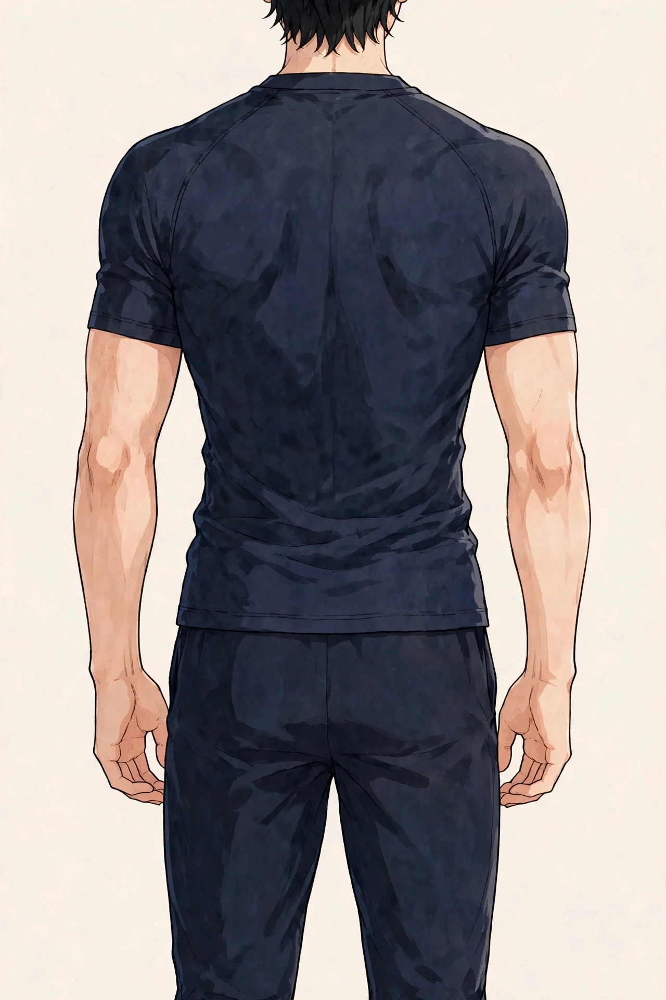

東三国で働く男性の「疲労感と腰の重さ」
考えられる要因とセルフケア、受診の目安

「夕方、仕事を終えるころになると腰まわりが重く感じる」「休日にしっかり寝たはずなのに、体の疲れが抜けきらない気がする」。東三国や新大阪、江坂方面へ通勤する男性から、こうした声を聞くことがあります。もちろん感じ方には個人差があり、疲労感や腰の重さの背景は一つとは限りません。この記事では原因を断定するのではなく、考えられる要因を整理し、日常で試せるセルフケアと、医療機関に相談したほうがよい目安をまとめます。
悩みの整理：「重さ」は夕方に強くなりやすい
朝はそうでもないのに、夕方から夜にかけて腰の重だるさや全身の疲労感が増してくる——このパターンは、デスクワーク中心の働き方の方に多い印象があります。重さの感じ方も、「腰だけが重い」「背中全体が張る感じがする」「脚までだるい」など人それぞれです。まずは「いつ、どこに、どんな重さを感じるか」を自分の言葉で整理しておくと、セルフケアの選び方も、専門家に相談するときの伝え方もスムーズになります。
考えられる要因
疲労感や腰の重さには、生活習慣や姿勢など、いくつかの要因が重なっている場合があります。代表的なものを挙げますが、当てはまるかどうかは人によって異なります。
腰まわりの筋肉の位置は、図1のとおりです。
腰を支える筋肉は、お尻（大殿筋など）や太もも裏（ハムストリングス）とつながって働きます。座り姿勢が続くと、この一帯がまとめて硬くなりやすいとされます。位置は目安です。
- 長時間の座り姿勢：デスクワークで座り続けると、腰まわりの筋肉が同じ姿勢のまま固まりやすくなり、立ち上がったときに重さを感じることがあります。
- 運動不足：体を動かす機会が減ると血の巡りが滞りがちになり、重だるさを感じやすくなる場合があります。
- 姿勢のクセ：猫背や、椅子に浅く座って腰が丸まる姿勢などが続くと、腰への負担が偏ることがあります。
- 睡眠の量と質：睡眠時間が短い日や眠りが浅い日が続くと、疲労感が残りやすくなると感じる方もいます。
- 冷えや季節の変わり目：エアコンの効いた室内で過ごす時間が長いと、腰まわりが冷えて重さを感じることもあります。
- 心理的な負担：忙しさやストレスが続くと体の緊張が抜けにくくなり、疲労感につながる場合があります。
日常で試せるセルフケア
特別な道具がなくても始められるものを中心にまとめました。痛みが強いときは無理をせず、違和感があれば中止してください。
- 1時間に一度は立ち上がる：トイレや飲み物のついでに少し歩き、軽く伸びをするだけでも姿勢のリセットになります。
- 腰・お尻・太もも裏のストレッチ：寝転んで両膝を抱える、椅子に座って片脚を反対の膝に乗せて前傾するなど、呼吸を止めずにゆっくり行います。
- 湯船に浸かる：シャワーで済ませがちな日こそ、ぬるめのお湯に10〜15分ほど浸かって体を温めてみてください。
- 帰宅後に軽く歩く：一駅分歩く、夕食後に10分散歩するなど、無理のない範囲で体を動かす時間を作ります。
- デスク環境の見直し：椅子の高さやモニターの位置、足裏が床につくかを確認し、腰が丸まりにくい座り方を意識します。
- 眠る前の過ごし方：就寝前のスマートフォンの時間を短くし、睡眠時間を確保することを優先します。
膝抱えの動きの目安は、図2のとおりです。

①仰向けになり、両膝を抱える ②膝を胸のほうへ軽く引き寄せ、腰とお尻の伸びを感じる ③20秒ほど保ってゆっくり戻す、を数回繰り返します。痛みが強いときは無理をしないでください。
セルフケアは一度に全部をやろうとせず、続けられそうなものを一つ選ぶところから始めるのがおすすめです。
医療機関への受診を考える目安
次のような様子がある場合は、セルフケアや当院でのケアの前に、整形外科などの医療機関への相談をご検討ください。当院は医療機関ではなく、症状の診断や治療は行いません。
- 脚のしびれがある、脚に力が入りにくい感じがする
- 安静にしていても強い痛みが続く
- 発熱を伴っている
- 排尿・排便の異常がある
- 転倒や事故のあとから痛みが出た
- 数週間たっても重さや痛みが続き、だんだん強くなっている
北辰堂のご案内
北辰堂は、大阪市淀川区東三国二丁目にある男性専用の整体院です。施術歴30年の平賀建人（鍼灸師・国家資格）が、整体とリラクゼーションを行います。当院では鍼灸施術は行いません。営業は平日・土曜17:00〜22:00、日曜10:00〜22:00の完全予約制です。料金は60分 初回2,000円／2回目以降6,000円、90分 初回3,000円／2回目以降9,000円で、お支払いは現金のみです。プライバシーへの配慮のため、詳しい住所はご予約確定後にLINEでご案内します。
料金は60分 初回2,000円／2回目以降6,000円、90分 初回3,000円／2回目以降9,000円で、お支払いは現金のみです。施術を受けたからといって疲労や腰の重さがどうなるかをお約束することはできませんが、その日の体の状態を確認しながら、ゆっくり体を預けられる時間をご用意しています。
コースの内容はメニュー・料金、施術者は施術者について、ご予約の流れは当日の流れとLINE予約の下書きづくり、場所についてはアクセスをご覧ください。そのほかの疑問はよくある質問にもまとめています。
ほかのコラム記事
関連する疾患別ページ
ご予約・ご相談はLINEから
東三国・新大阪・淀川区周辺で、体のケアの相談先をお探しの方は、LINE公式アカウント（北辰堂）からお気軽にご連絡ください。現在の状態をお聞きしたうえで、施術の進め方をご案内します。
LINEで予約する